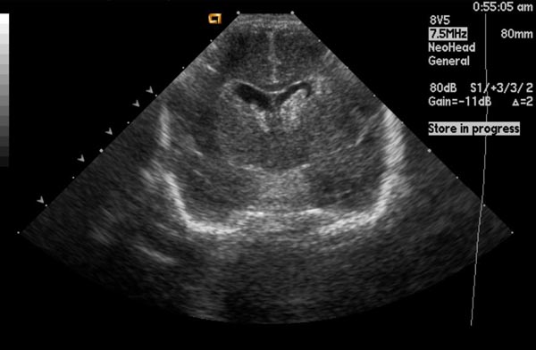

Ficha del catálogo
Hemorragia de la matriz germinal del prematuro
- Sistema
- Nervioso
- Modalidad
- US
- Región
- Encéfalo neonatal, región subependimaria y ventrículos laterales
- Dificultad
- Intermedio
La hemorragia de la matriz germinal es la complicación neurológica más característica del recién nacido prematuro y se origina en el tejido germinal subependimario, muy vascularizado y frágil, situado junto al surco caudotalámico. Su riesgo aumenta a menor edad gestacional y menor peso, y condiciona el pronóstico neurológico.
Técnica
Ultrasonido transfontanelar con transductor sectorial de alta frecuencia a través de la fontanela anterior, con barridos coronales y sagitales completos. Se emplea también la ventana mastoidea para valorar la fosa posterior.
Qué observar
- Foco ecogénico en el surco caudotalámico, junto a la cabeza del núcleo caudado
- Presencia de material ecogénico dentro de los ventrículos laterales
- Grado de dilatación ventricular y su evolución en controles seriados
- Ecogenicidad del parénquima periventricular adyacente
- Simetría entre ambos lados y extensión de la lesión
- Aparición tardía de quistes periventriculares o de tabiques intraventriculares
Hallazgos
En la fase aguda se observa un foco hiperecogénico redondeado en la región subependimaria del surco caudotalámico, que puede extenderse al interior del ventrículo y formar coágulos ecogénicos adheridos al plexo coroideo. La dilatación ventricular progresiva indica alteración de la circulación del líquido cefalorraquídeo. La afectación del parénquima se manifiesta como área ecogénica periventricular que con las semanas se cavita y deja quistes.
Perlas
El plexo coroideo normal es ecogénico y puede confundirse con un coágulo, pero no se extiende por delante del agujero de comunicación interventricular ni alcanza el surco caudotalámico. Por eso todo foco ecogénico situado por delante de ese punto debe considerarse hemorrágico mientras no se demuestre lo contrario.
Diagnóstico diferencial
- Plexo coroideo prominente
- Sigue la anatomía del plexo, no rebasa el agujero interventricular hacia delante y es simétrico y de contorno liso.
- Leucomalacia periventricular
- Ecogenicidad periventricular difusa y bastante simétrica que evoluciona a quistes múltiples, sin foco subependimario ni sangre intraventricular.
- Ventriculitis
- Ecos intraventriculares con tabiques y engrosamiento ependimario en contexto séptico, sin coágulo caudotalámico.
- Infarto de otra causa
- Distribución no periventricular y ausencia del componente subependimario típico del prematuro.
Simuladores
- Ecogenicidad normal del surco caudotalámico en barridos oblicuos
- Artefacto de reverberación bajo la fontanela
- Quiste subependimario sin antecedente hemorrágico
Por modalidad
- TC
- Se evita en el neonato por la radiación y aporta poco frente al ultrasonido en el seguimiento.
- RM
- Se reserva para precisar el daño parenquimatoso, la lesión de sustancia blanca y el pronóstico antes del alta.
Protocolo
Estudio inicial en los primeros días de vida en prematuros de riesgo, con controles seriados durante las primeras semanas y antes del alta. Conviene documentar la medida de la dilatación ventricular en cada control para detectar de forma precoz la hidrocefalia posthemorrágica.
Clasificación
Se gradúa en cuatro categorías crecientes, desde la hemorragia limitada a la matriz germinal subependimaria, pasando por la extensión intraventricular sin dilatación y con dilatación ventricular, hasta la que asocia lesión hemorrágica del parénquima periventricular, forma esta última con peor pronóstico funcional.
Errores frecuentes
- Confundir plexo coroideo ecogénico con coágulo intraventricular
- No realizar barridos sagitales y omitir el surco caudotalámico
- Informar un único estudio sin controles evolutivos que detecten la dilatación progresiva

hemorragia intraventricular matriz germinal prematuro ultrasonido transfontanelar surco caudotalámico hidrocefalia posthemorrágica